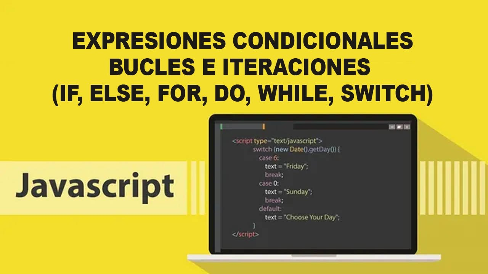

Condicionales en JavaScript
Las condicionales permiten ejecutar diferentes bloques de código dependiendo de si una condición es verdadera o falsa. Las más comunes en JavaScript son if...else y switch.
Estructura if / else
Evalúa una condición y ejecuta un bloque de código si es verdadera, y otro si es falsa.
<
let edad = 18;
if (edad >= 18) {
console.log('Es mayor de edad');
} else {
console.log('Es menor de edad');
}Estructura switch
Permite evaluar múltiples casos para una misma variable o expresión.
let dia = 2;
switch (dia) {
case 1:
console.log('Lunes');
break;
case 2:
console.log('Martes');
break;
default:
console.log('Otro día');
}